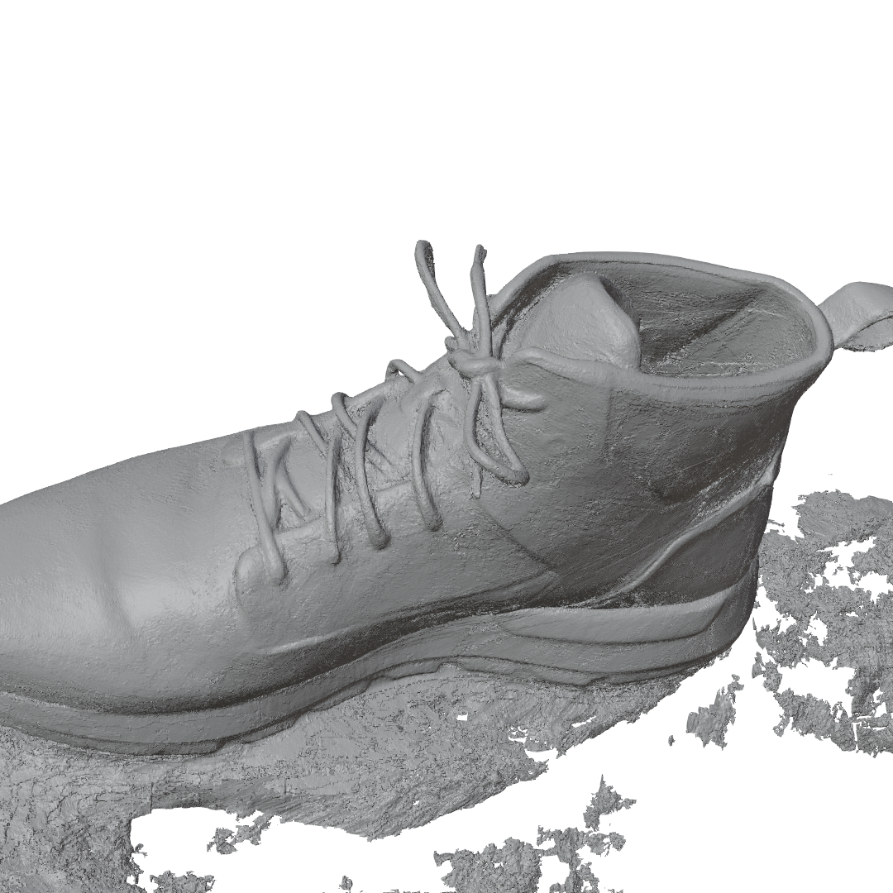
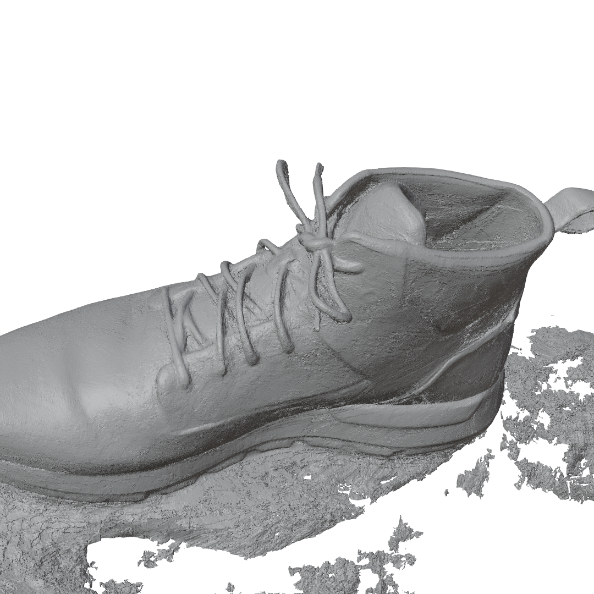
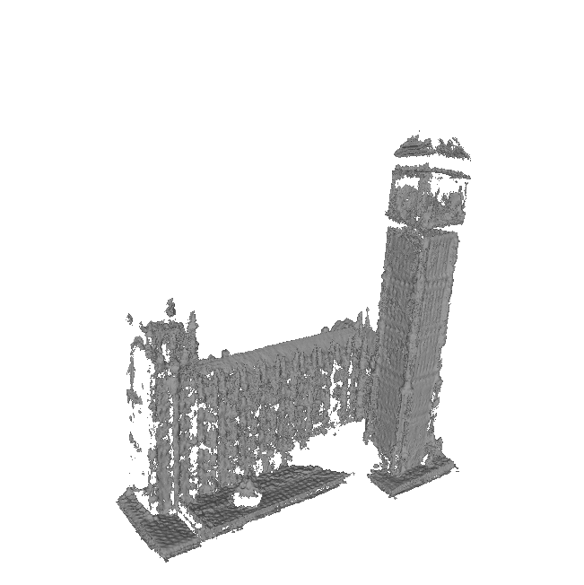
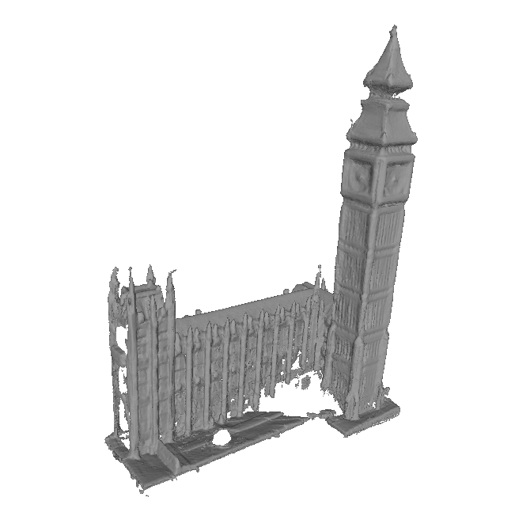
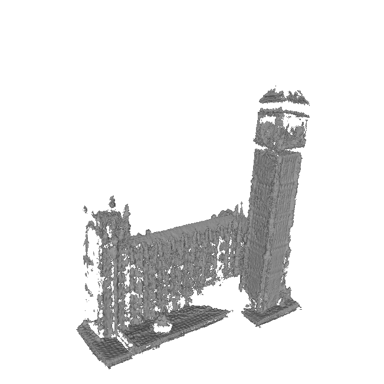
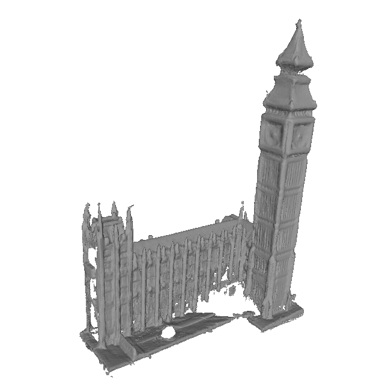

Barron, Jonathan T., et al. "Mip-nerf 360: Unbounded anti-aliased neural radiance fields." Proceedings of the IEEE/CVF Conference on Computer Vision and Pattern Recognition. 2022.
Cao, Chenjie, Xinlin Ren, and Yanwei Fu. "MVSFormer: Multi-View stereo by learning robust image features and temperature-based depth." arXiv preprint arXiv:2208.02541 (2022).
Guédon, Antoine, and Vincent Lepetit. "SuGaR: Surface-aligned Gaussian splatting for efficient 3D mesh reconstruction and high-quality mesh rendering." arXiv preprint arXiv:2311.12775 (2023).
Kerbl, Bernhard, et al. "3D Gaussian splatting for real-time radiance field rendering." ACM Transactions on Graphics 42.4 (2023): 1-14.
Kirillov, Alexander, et al. "Segment Anything." Proceedings of the IEEE/CVF International Conference on Computer Vision. 2023.
Knapitsch, Arno, et al. "Tanks and Temples: Benchmarking large-scale scene reconstruction." ACM Transactions on Graphics (ToG) 36.4 (2017): 1-13.
Li, Kejie, et al. "MobileBrick: Building LEGO for 3D reconstruction on mobile devices." Proceedings of the IEEE/CVF Conference on Computer Vision and Pattern Recognition. 2023.
Yariv, Lior, et al. "BakedSDF: Meshing neural SDFs for real-time view synthesis." ACM SIGGRAPH 2023 Conference Proceedings. 2023.


 

 


